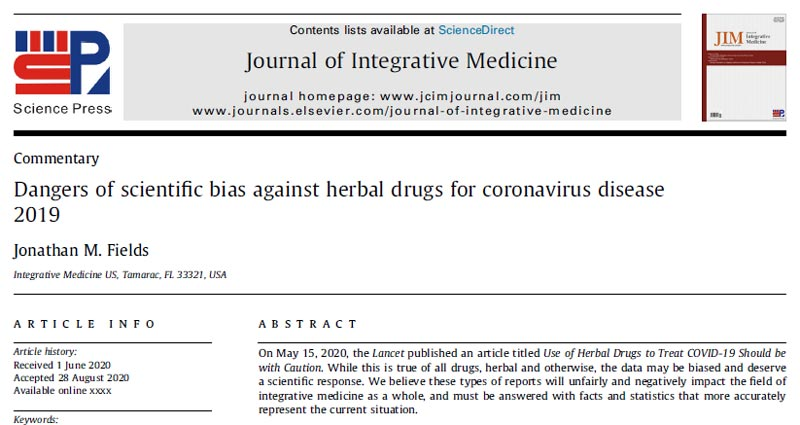

DRAFT PREVIEW · integrativemedicine.us · proposed slug /chinese-herbal-medicine/ · not published · all drafts
Integrative Medicine US · Coral Springs
Chinese Herbal Medicine
A shelf of single herb bottles, one for sleep, one for energy, one for digestion, is not what Chinese herbal medicine is. The tradition I practice is built on the formula: a balanced team of herbs chosen for one particular person. Here is how I think about formulas, how I choose them and why safety drives every decision.
Dr. Jonathan M. Fields, DAOM, Doctor of Acupuncture and Oriental Medicine
01
A Formula Is a Team
In a well built formula, herbs support and balance one another. Because they work together, no single herb has to be pushed to a high dose. That matters, because some herbs can become toxic at certain levels. A formula lets each herb do its part at a moderate amount while others in the blend smooth out its effects.
Compare that with a common Western supplement habit: one ingredient at a high dose, on the idea that if a little helps, more must be better. A bigger single dose also means a bigger problem if your body reacts poorly.
02
Centuries of Observation
Chinese formulas were refined over thousands of years of use by enormous numbers of people. Practitioners watched what helped and what did not, recorded which combinations worked, and taught the next generation. That long cycle of observing, recording and refining is, in many ways, a form of the scientific method carried out across centuries.
Meet your practitioner
Dr. Jonathan M. Fields, DAOM, L.Ac.
I am a Doctor of Acupuncture and Oriental Medicine and the founder of Integrative Medicine US. My training spans the United States and China, including time at the Shaolin Temple, and my practice blends classical Chinese medicine with orthopedic and functional medicine assessment. I have also studied functional medicine, blood chemistry and functional endocrinology, and I have taught qigong and tai chi for more than twenty years. Every plan I write starts with listening, because the details of your life usually explain more than any single test.
DAOM, Doctor of Acupuncture and Oriental Medicine
Florida licensed acupuncturist, AP3879
NCCAOM Board Certified
Certified in Dry Needling
03
Built Around Your Constitution
Every herb is described by its flavor, its energy (warming or cooling, for example), the channels it influences and its functions. Those qualities are how an herbalist fits a formula to a person rather than to a symptom.
Picture three people who each come in with headaches. One runs hot, one runs cold. One has a larger build, one is slender. One tends toward dryness, another toward dampness or phlegm. They may leave with three different formulas.
My priority is your body type. When the overall pattern is supported, the whole person tends to improve, and symptoms often follow. Herbs aimed at a symptom still have a place, but they come second.
Herbs and Chinese medicine materials
04
Teas, Tinctures and Capsules
I prepare custom formulas in the form that suits your day:
Teas, the traditional way to take herbs
Tinctures, liquid extracts that are easy on the go
Capsules, for busy schedules or anyone who would rather not taste them
Herbs are essentially internal medicine in this tradition. They work from the inside, alongside acupuncture and lifestyle care.
Learn more
The deeper story
For readers who want the details: the research, the history and the reasoning behind how we work.
Sourcing: Where I Do Not Compromise
I only use herbs that are tested, bottled and manufactured in the United States, with third party lab testing on every batch. I strongly encourage patients not to buy herbal products online or at local markets. Products from unknown sources may carry:
Synthetic ingredients or undeclared drugs
Fillers that dilute the herbs
Toxins and heavy metals
Bacterial or fungal contamination, including mold
Preparation and Training
Some herbs must be properly prepared to be used safely, and an improperly prepared herb can be toxic. Choosing and combining herbs takes real training, which is why working with a certified herbalist matters.
Taking high doses of random nutrients and herbs on your own can, in some cases, contribute to serious problems such as liver damage or kidney failure. Problems like these are rare when herbs are prescribed and monitored by a licensed, trained acupuncturist and herbalist who knows your history and checks in on you.
Conservative Dosing and Follow Up
I keep dosages conservative. Combined with careful sourcing, that is how I aim to give your body steady support with safety at the center. As your body changes, your formula may change too, so we check in and adjust.
My Training

Dr. Fields' published herbal medicine article
I studied Chinese medicine in China, including at Beijing Gulou Hospital and with Shaolin monks at the Shaolin Temple. I hold a doctorate and a master's degree in Eastern medicine and am NCCAOM board certified in Chinese herbology and in the foundations of Eastern medicine. I have also been published on herbal medicine in the Journal of Integrative Medicine (read it on the NIH site). My background includes functional medicine and Western herbs, so I can look at your care from both sides. More about me.
How a Formula Is Structured
Classical formulas are organized by role. A chief herb addresses the main pattern. Deputy herbs strengthen or broaden that action. Assistant herbs handle secondary issues or temper any harshness in the chief. An envoy herb harmonizes the blend and, in traditional terms, guides it to the right area. Studying formulas means learning hundreds of these classic combinations and then learning how to modify them. When I adjust a formula for you, I am usually starting from one of these time tested structures and changing a few pieces to match your constitution and how you are responding.
Common Reasons People Ask About Herbs
Patients often ask about herbal support for sleep, stress, digestion, seasonal colds, menstrual comfort, fertility support and low energy. In every case, I first look at the whole pattern rather than reaching for a "sleep herb" or an "energy herb." Two people who both sleep poorly can have opposite patterns, one overheated and restless, one depleted and anxious, and they would need very different formulas.
Herbs, Food and Lifestyle
In Chinese medicine, food is the first layer of medicine and herbs are a stronger, more focused layer. I often pair a formula with simple food guidance, such as more warm cooked meals for someone who runs cold, or fewer greasy and sweet foods for someone prone to dampness. Small, steady habits help a formula do its job.
What to Expect After Starting
Most people start with a short trial so we can see how their body responds. Tell me about any digestive changes, rashes, headaches or anything that feels off, and stop the formula and call if something concerns you. At follow ups we may keep the formula as is, adjust the doses or swap herbs as your pattern shifts.
Herbs Across a Lifetime
Chinese medicine has formulas for every stage of life, from children to older adults, and the same principle runs through them all: match the formula to the person. An older patient who feels cold and tired needs a very different approach than a young athlete who runs hot and recovers slowly from training. Pregnancy, breastfeeding and chronic illness all call for extra care, and some herbs are simply not used in those situations. That is another reason I take a full history before recommending anything, and why I ask you to update me when your health or medications change.
Why Taste Matters
Patients sometimes laugh when I ask how their tea tastes, but in Chinese medicine flavor carries information. Bitter tends to clear and drain, sweet tends to nourish, pungent tends to move and disperse. How a formula tastes to you, and how that changes over time, can be useful feedback.
Frequently Asked Questions
Can I take herbs with my medications?
Some herbs and medications interact. I review your full history and medication list first, and I encourage you to keep your doctor informed. Never start, stop or change a medication without your physician.
Why not buy a popular blend online?
It may not be tested for contamination, may contain fillers or synthetics, and was not chosen for your constitution.
Will my formula stay the same?
Not always. We adjust as you change.
How long do people usually take a formula?
It varies widely. Some formulas are used for a short stretch during a cold or a stressful season, others for longer periods with regular check ins.
What if I do not like the taste?
Tell me. Capsules and tinctures are good alternatives, and sometimes a small change to the formula helps.
Ready to talk it through?
Integrative Medicine US cares for patients across north Broward County. Each clinic offers the same approach: a careful first conversation, a hands on exam and a plan built for one person. Call to ask which location and schedule suits you best, or request a free consultation online and our team will reach out. When you call, have a short list of your main concerns, your medications and any recent lab work handy. Our team will explain what the first visit includes, how long to plan for and what to wear, so you can arrive relaxed and ready.
Patients come to us from Parkland, Margate, Coral Springs, Tamarac, Coconut Creek, Sunrise, Plantation and Pompano Beach.